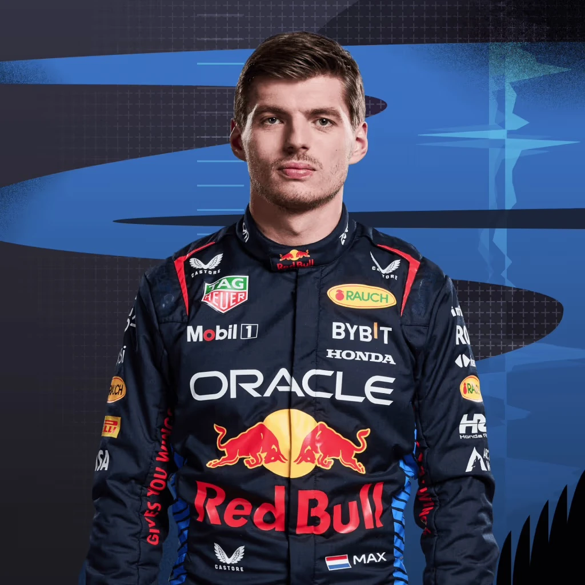

Max vertappen
Piloto F1
Carreira
Max Emilian Verstappen é um automobilista neerlandês. Ele é piloto de Fórmula 1 desde 2015, tendo feito sua estreia pela equipe Toro Rosso. Foi quatro vezes campeão da Fórmula 1 em 2021, 2022, 2023 e 2024 e terminou em terceiro lugar em 2019 e 2020 com a Red Bull Racing, equipe pela qual corre desde 2016.
Competências
- Piloto completo (velocidade, consistência, gestão de corrida).
- Habilidade em ultrapassagens e defesa de posição.
- Excelente comunicação com a equipe (feedback técnico preciso).
Contato
Gerente: Raymond Vermeulen (Team Verstappen)
E-mail profissional: contato@verstappen.com
Red Bull Racing: media@redbullracing.com
Resumo Profissional
Piloto de Formula 1
- Piloto titular desde 2016
- Tricampeão mundial de formula 1 (2021, 2022, 2023)
- Recorde de vitórias em uma temporada (19 em 2023)
Piloto de Formula 1
- Piloto titular desde 2016
- Tricampeão mundial de formula 1 (2021, 2022, 2023)
- Recorde de vitórias em uma temporada (19 em 2023)
Formação Academica
Piloto de Formula 1
- Destaque no kartismo (campeão mundial em 2013)
- Categoria de base (2014-2015)
- Campeão da F3 Europeia (2014)
- Primeiros pontos no GP da Malásia (2015)
Piloto de Formula 1
- Destaque no kartismo (campeão mundial em 2013)
- Categoria de base (2014-2015)
- Campeão da F3 Europeia (2014)
- Primeiros pontos no GP da Malásia (2015)
Referencias
Gerente: Raymond Vermeulen (Team Verstappen)
E-mail profissional: contato@verstappen.com
Red Bull Racing: media@redbullracing.com
Gerente: Raymond Vermeulen (Team Verstappen)
E-mail profissional: contato@verstappen.com
Red Bull Racing: media@redbullracing.com